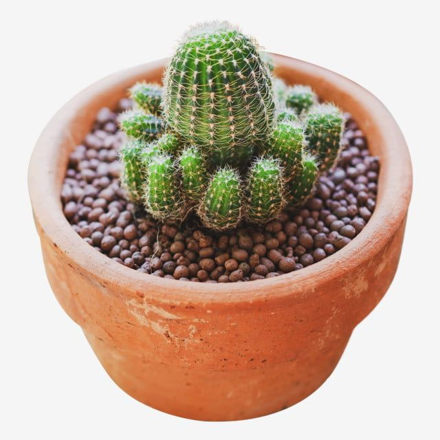

Cheetah

Kaktus adalah tumbuhan yang tahan kekeringan dan biasanya ditemukan di daerah gurun. Mereka memiliki adaptasi unik yang memungkinkan mereka untuk menyimpan air dalam jaringan mereka, sehingga mereka dapat bertahan hidup dalam kondisi lingkungan yang keras dan kering.
Kaktus datang dalam berbagai bentuk dan ukuran, mulai dari kaktus kecil yang hanya beberapa sentimeter hingga kaktus besar yang dapat mencapai beberapa meter tingginya. Beberapa kaktus juga menghasilkan bunga yang indah meskipun umumnya mereka tidak memerlukan banyak air atau perawatan untuk tumbuh dan berkembang.
Untuk informasi lebih lanjut tentang kaktus, Anda dapat mengunjungi halaman Wikipedia tentang Kaktus.